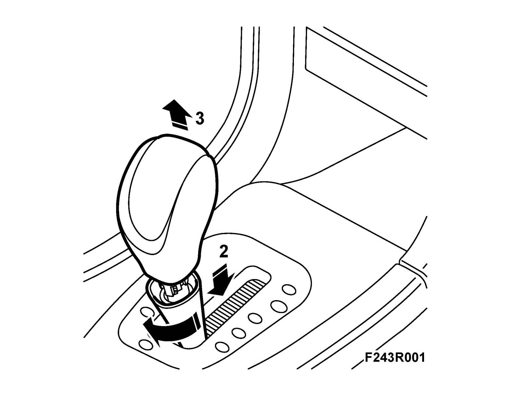
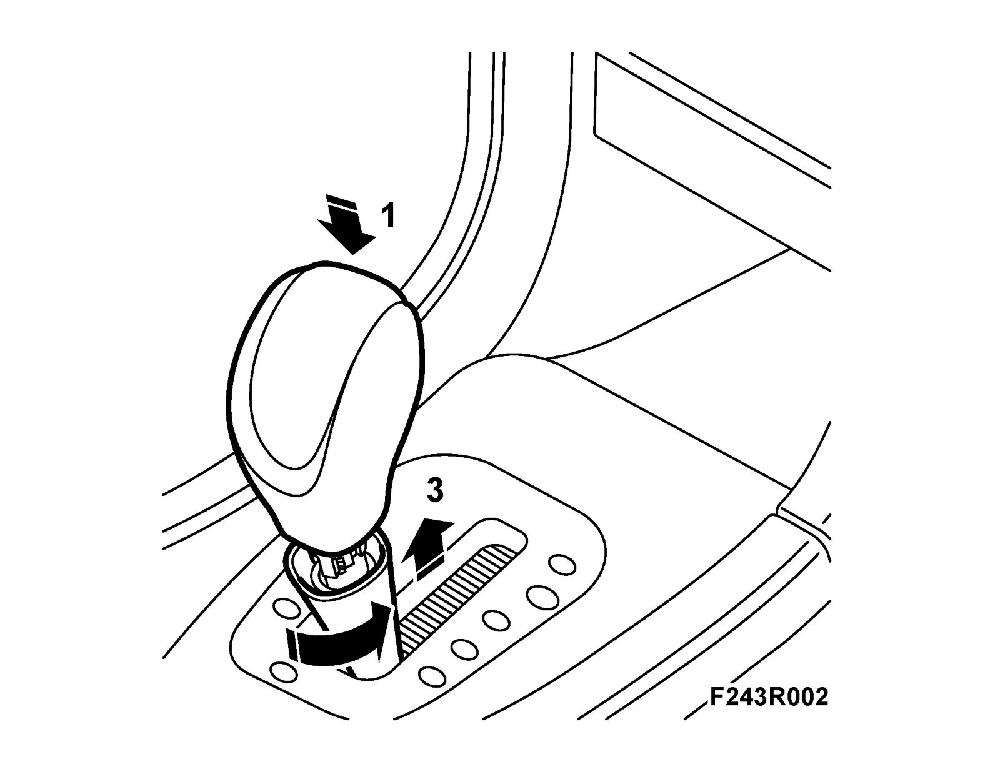

Gear Lever Knob
Gear lever knobTo remove
1. Engage D with the selector lever.
2. Turn the locking sleeve slightly clockwise and press down. Hold in the release button on the selector lever and pull up the knob.

3. Lift up the locking sleeve.
To fit
1. Apply a thin coat of Vaseline to the hole in the upper part of the pull rod and the hose on the gear selector lever. Fit the locking sleeve on the gear selector lever.

2. Move the selector lever to position D. Hold in the release button and press the selector lever knob into place. Use a small screwdriver to make sure that the release button does not spring out.
3. Fit the locking sleeve to the gear lever knob in a manner similar to its removal. Press the hose of the selector lever up toward the locking sleeve to hide any kinks in the hose.
4. Check that the different gear positions can be engaged.